Ane Log: Moyako Neesan no Tomaranai Monologue
Short and harmless shenanigans
Quick Thoughts
A rewatch of Ane Log reminded me exactly why this lands right in the middle. It’s a quick, harmless watch that doesn’t ask much from you, which is honestly its biggest strength.
The episodes are easy to breeze through, but the comedy leans heavily into awkward misunderstanding scenarios that get repetitive fast and can be more annoying than funny.
The animation feels noticeably stiff, and while the fanservice is there, it’s pretty standard and nothing particularly memorable. It’s one of those shows you throw on when you want something mindless for a few minutes, but it doesn’t leave much of an impression after.
5/10 — short, easy to watch, okay fanservice, but held back by stale gags and rigid animation.
Scenes & Thoughts
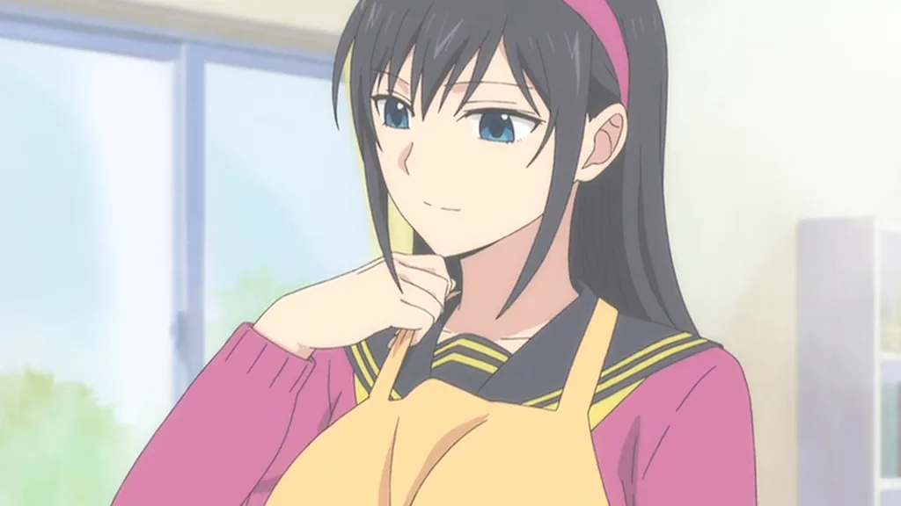
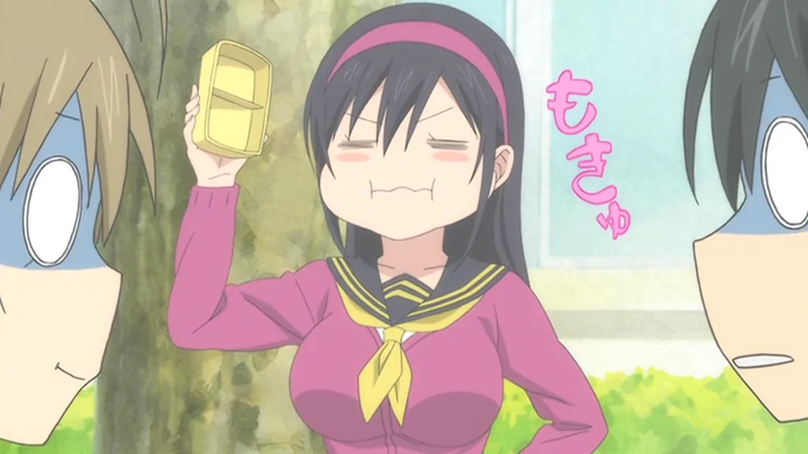
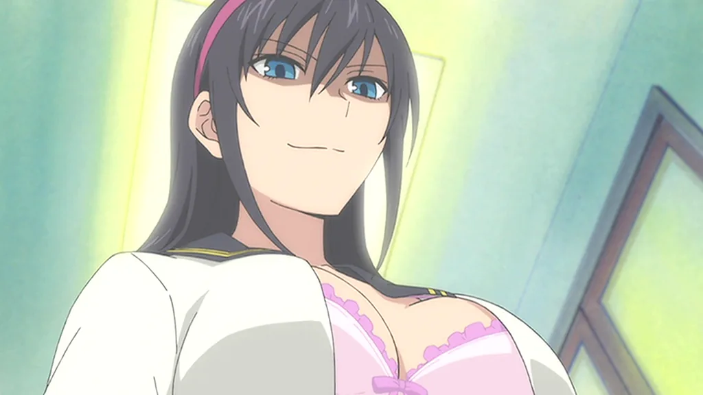
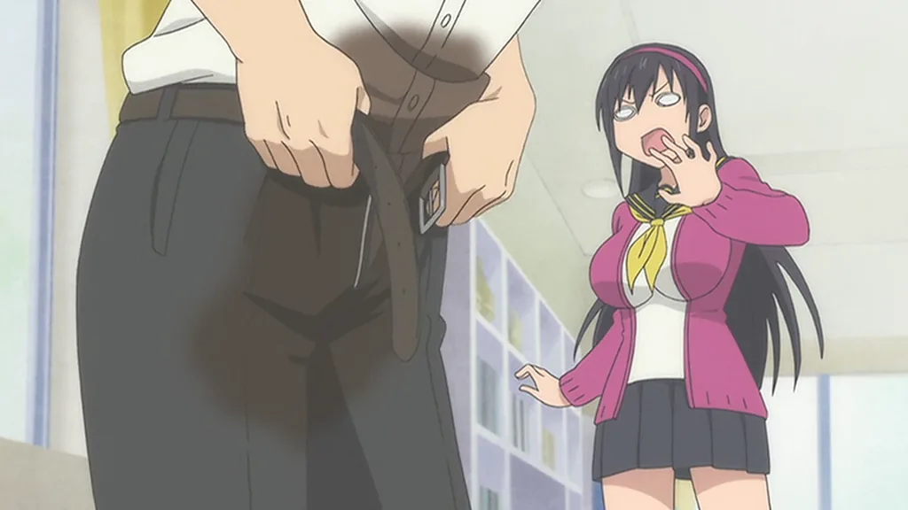
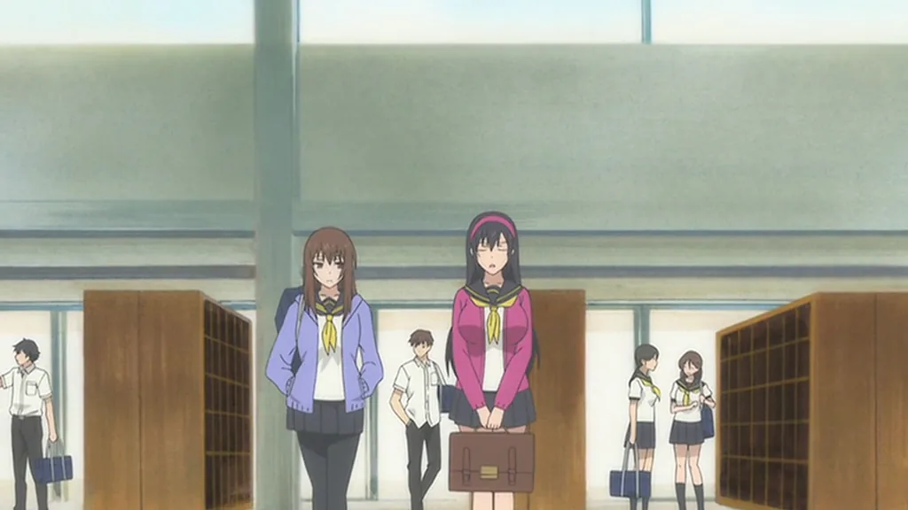
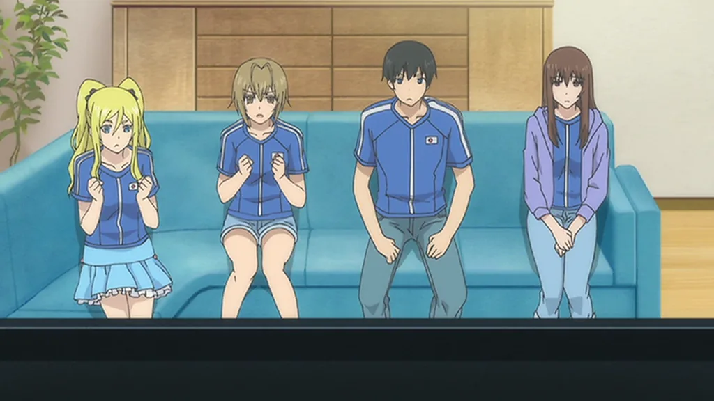
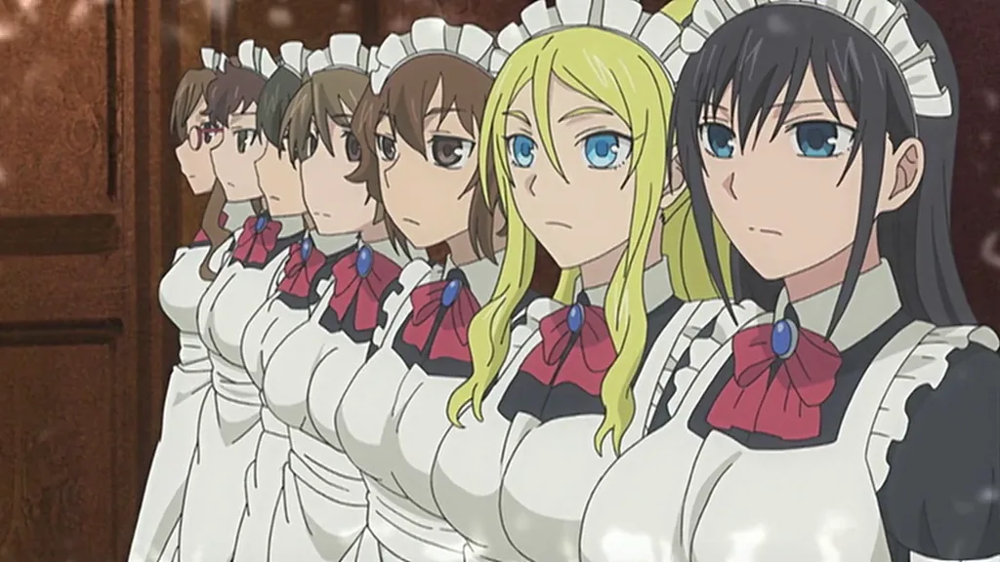
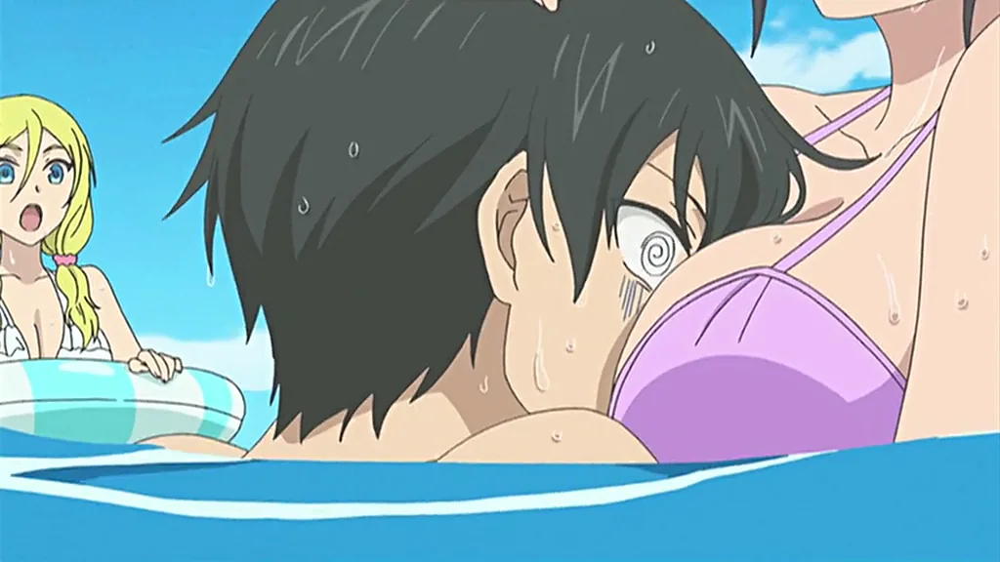
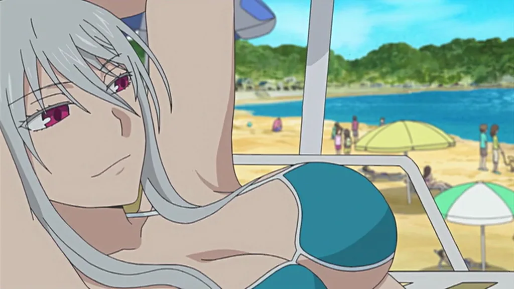
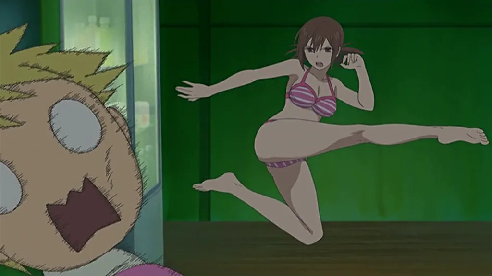
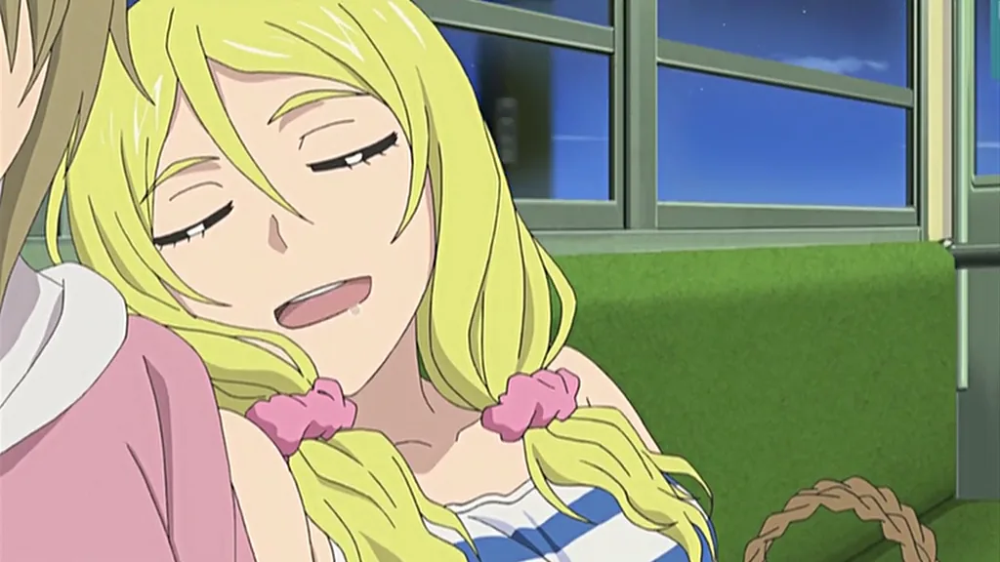
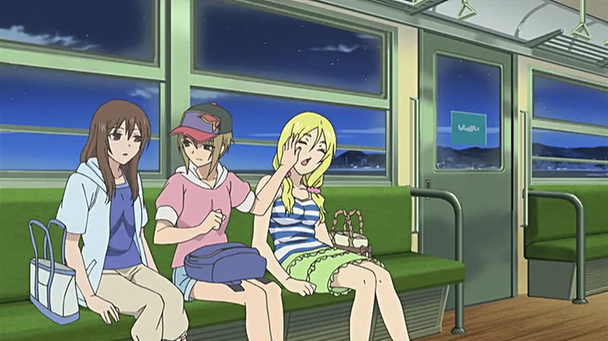
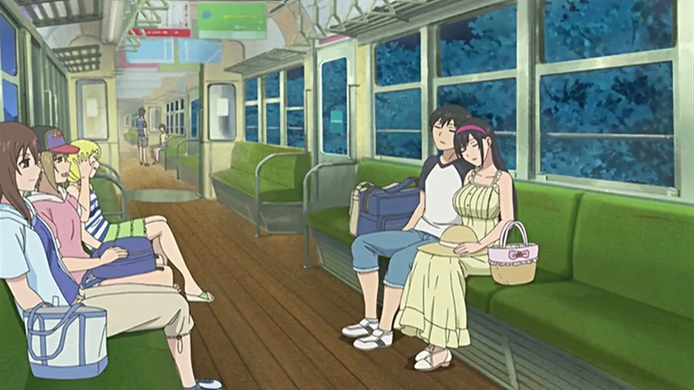
✔ What Worked
- Short runtime makes it very easy to get through
- Decent enough fanservice for what it’s going for
- Doesn’t overstay its welcome
✖ What Didn’t
- Comedy relies too much on repetitive misunderstanding scenarios
- Some situations come off more annoying than funny
- Stiff animation makes everything feel a little lifeless
- Very little that stands out or feels memorable
- Characters don’t get enough depth to leave an impact
Character Verdicts
Character busts are ranked biggest to smallest, left to right
Moyako Konoe
The overprotective big sister whose constant misunderstandings drive most of the series’ awkward comedy
Added to BucketFuuka Saeki
The calmer, more grounded character who helps balance out the show’s louder antics
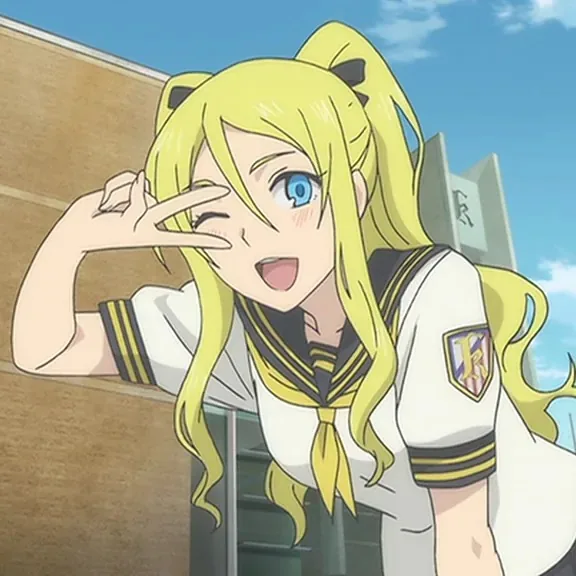
Brisa Umehira
A playful side presence who adds extra chaos to the already ridiculous situations
Kasumi Kurose
An eccentric supporting character who leans fully into the series’ over-the-top humor